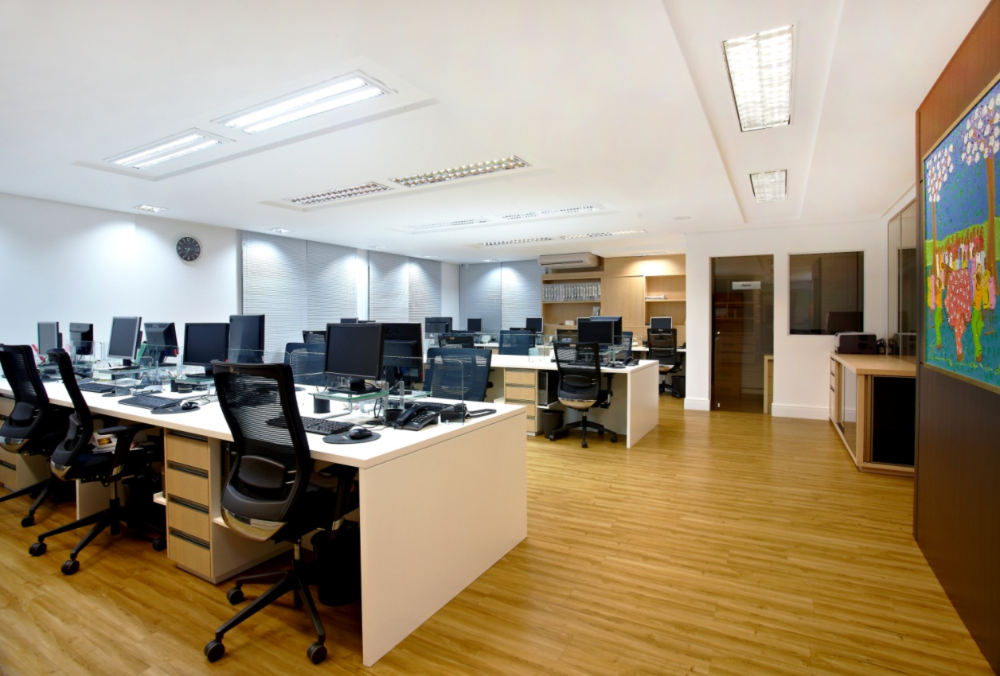

Sobre a Superservice
A Superservice iniciou seus serviços em 2000, desde então, vem se atualizando no mercado com inovação, estratégia e avanços tecnológicos com o objetivo de trazer soluções aos clientes, avaliando as suas necessidades. Prestamos serviço para clientes com os mais variados ramos de atividades, sempre com segurança, dedicação e qualidade.
Nossas áreas de serviços
-
Assessoria Contabil
Processamos e gerenciamos as informações contabeis para auxiliar o cliente na tomada de decisões
-
Assessoria Trabalhista
Observamos em detalhes o seu negócio para melhor segurança na parte trabalhista e previdenciária
-
Assessoria Tributária
Realizamos analise de regime tributario para que a empresa tenha a melhor eficiencia possivel
-
Assessoria Societária
Realizamos desde a abertura da empresa até a regularização e documentação em diversos âmbistos governamentais
-
Outros Serviços
Estamos a disposição para auxiliar o cliente, prestando consultoria em qualquer assunto para seu negócio